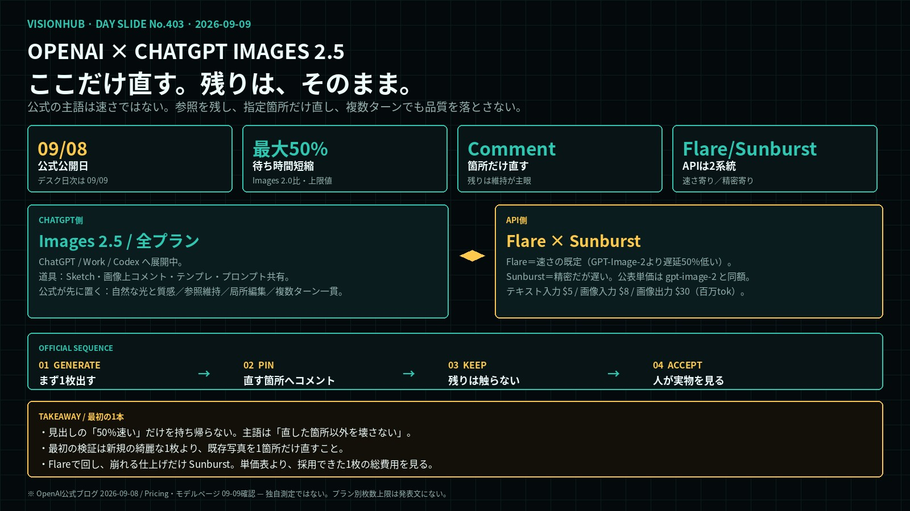
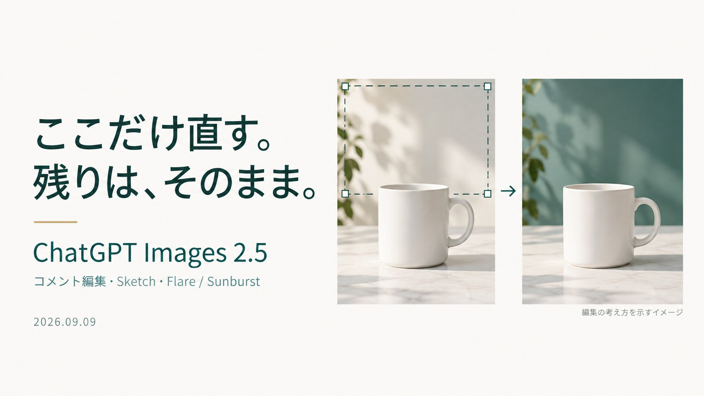
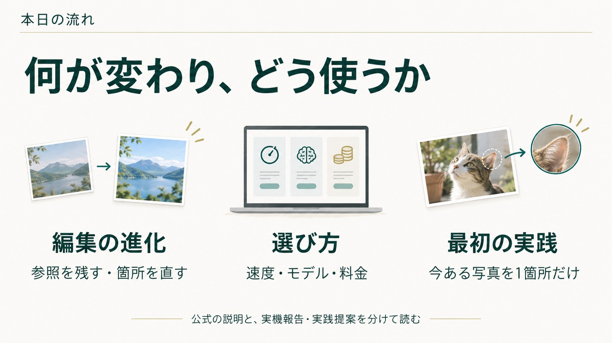

残す側参照と複数ターン
- 参照写真の被写体が、別の場所・画風でも認識しやすい
- 特徴が持ち越されやすい
- 長い会話でも、前の修正が残りやすい
- 編集を重ねても画質が落ちにくい、と書く
OPENAI × CHATGPT IMAGES 2.5
OpenAIは2026年9月8日、ChatGPT Images 2.5を出した。公式の主語は「よりきれいな1枚」ではない。参照写真の被写体を残し、指示した箇所だけ直し、複数ターンでも品質を落とさないことだ。待ち時間は Images 2.0 比で最大50%短い、と書く。日本デスクの日次は2026-09-09。公式の日は 09-08 である。

1枚ボード・クリックで拡大ChatGPT Images 2.5 — 生成より編集が残る更新
全プラン
ChatGPT / Work / Codex。Web・デスクトップ・モバイルへ展開中。Sketch・コメント・テンプレ・プロンプト共有。
Flare / Sunburst
Flareは速さの既定。Sunburstは精密だが遅い。公表単価は gpt-image-2 と同額。
公式が先に置くのは「自然な光と質感」「参照被写体の維持」「指定箇所だけの編集」「複数ターンでの一貫」。速度は副次。プランごとの枚数上限は発表文にない。 カバーは images/0909/cover.jpg。

プレビュー01・クリックで拡大
プレビュー02・クリックで拡大TAKEAWAY
Images 2.5の主語は速さではない。指定したところだけ直し、残りを残す。
最初の検証は、今ある写真を1箇所だけ直すこと。
Flareで回し、崩れる仕上げだけ Sunburst。単価表より、採用できた1枚の総費用を見る。